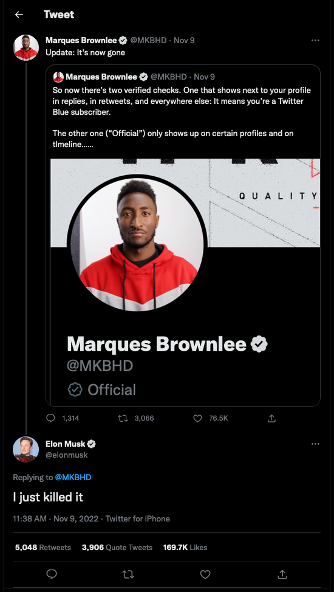

Verified on Twitter
In November 2022, Twitter (or is it “X” now?) began vacillating on how (and whether!) to implement an indicator for active, notable, and authentic accounts of public interest that Twitter had independently verified. Prior to a change in leadership, blue checkmarks indicated that an account had passed Twitter’s verification requirements. After the change, though, Twitter experimented with blue checkmarks indicating only a subscription to Twitter Blue, a change that they have decided to make permanent starting in mid-April 2023.
For a brief moment in time, Twitter even adopted gray checkmarks instead, to indicate an account’s “official” status:

That change was short-lived, however, as official accounts again appear to now have blue checkmarks. Though some official business-specific accounts now show gold checkmarks. Quite a few colors, to be sure!
Source: twitter.com/elonmusk/status/1590383366213611522
It’s reasonable to assume that Twitter implements their checkmark with some combination of HTML and CSS. Suppose that, when gray checkmarks indicated an official account, Twitter’s HTML and CSS for official checkmarks looked as follows:
<div class="container position-relative vh-100">
<div class="check-official position-absolute start-50 top-50 translate-middle">
<i class="fa-solid fa-check position-absolute start-50 top-50 translate-middle"></i>
</div>
</div>
.check-blue {
background-color: #1EA0F3;
border-radius: calc(50px * 0.5);
height: 50px;
width: 50px;
}
.check-official {
background-color: #D6D9DB;
border-radius: calc(50px * 0.5);
height: 50px;
width: 50px;
}
.check-blue i {
color: white;
font-size: calc(50px * 0.5);
}
.check-official i {
color: white;
font-size: calc(50px * 0.5);
}
Notice how, in this example, Twitter uses Bootstrap classes to center the check in the middle of the screen. And in their own CSS, Twitter also applies styles to all i elements that are children of elements with the check-blue and check-official classes, using .check-blue i and .check-official i as selectors. You can view this code in a sandbox of sorts at codepen.io/dlloyd09/pen/xxywMqN.
- (2 points.) In no more than two sentences, in what ways is this CSS poorly designed?
You might have noticed while working with Bootstrap that some of Bootstrap’s classes are meant to be used in pairs. For example, consider how Bootstrap implements buttons: most of a button’s design is implemented with a class called btn, but a button’s colors are implemented with a second class (e.g., btn-primary). Suppose that, as an engineer at Twitter, you’d like to implement the same design pattern, one that could work for this version of the HTML:
<div class="container position-relative vh-100">
<div class="check check-official position-absolute start-50 top-50 translate-middle">
<i class="fa-solid fa-check position-absolute start-50 top-50 translate-middle"></i>
</div>
</div>
- (3 points.) With what CSS could you re-implement Twitter’s checkmarks, factoring out most properties to a
checkclass and confining colors tocheck-officialandcheck-blueclasses? Submit this CSS in a file calledstyles0.css.
Note we that we have a sandbox of sorts for you at codepen.io/pen?template=xxywMqN. Try it out, though no need to make an account with CodePen unless you’d like.
Though factoring classes into check, check-official, and check-blue is one step in the right direction, there are still further optimizations Twitter could make. One of these might be to introduce CSS variables, so as to avoid the use of “magic numbers.” Read up on var, a CSS function that can insert values for properties.
- (3 points.) Suppose that you’ve been asked to make the code you wrote in response to Question 2 better designed, this time using global CSS variables and
var. Propose a second iteration of your stylesheet. (You can ignore, for now, all other improvements besides using variables!) Submit this CSS in a file calledstyles1.css.
Note that the sandbox of sorts at codepen.io/pen?template=xxywMqN also supports CSS variables and var. Try it out, though no need to make an account with CodePen unless you’d like.
For the sake of exploring our options, let’s consider one more design pattern Twitter could use. Instead of using classes in pairs (i.e., using check along with check-official or check-blue), Twitter could use only a single class per checkmark (i.e., check-official or check-blue) and still ensure the core design of a check isn’t duplicated. To accomplish this feat, check-official and check-blue would need to inherit the properties of a basic check, while still applying some custom style, such as a unique background-color.
We could implement this pattern with plain CSS, but it’s easier if we use a pre-processor—a program that takes CSS with some “syntactic sugar” and converts it into plain CSS for us. One of the most popular pre-processors for CSS is Sass, and one of the great features of Sass is the ability to easily allow classes to “include” properties we’ve defined elsewhere. Read up on Sass’s documentation for @mixin and @include, then take a look at the CSS below:
@mixin check($size: 50px) {
width: $size;
height: $size;
border-radius: $size * 0.5;
i {
color: white;
font-size: $size * 0.5;
}
}
While you’re at it, you might find Sass’s documentation on variables handy!
- (3 points.) Suppose that you’ve been asked to implement
check-blueandcheck-officialclasses that include the properties from thecheckmixin while retaining the custom styles affiliated with a blue checkmark and official checkmark, respectively. Using Sass as your pre-processor, propose the CSS you would write. Submit this CSS in a file calledstyles2.css.
Note that the sandbox of sorts at codepen.io/pen?template=BaVWRRY supports using Sass as a pre-processor. No need to make an account with CodePen unless you’d like.